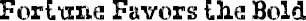

MR. BROWNE’S DECEMBER PRECEPT was: Fortune favors the bold. We were all supposed to write a paragraph about some time in our lives when we did something very brave and how, because of it, something good happened to us.
I thought about this a lot, to be truthful. I have to say that I think the bravest thing I ever did was become friends with August. But I couldn’t write about that, of course. I was afraid we’d have to read these out loud, or Mr. Browne would put them up on the bulletin board like he does sometimes. So, instead, I wrote this lame thing about how I used to be afraid of the ocean when I was little. It was dumb but I couldn’t think of anything else.
I wonder what August wrote about. He probably had a lot of things to choose from.